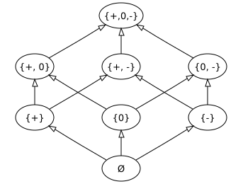
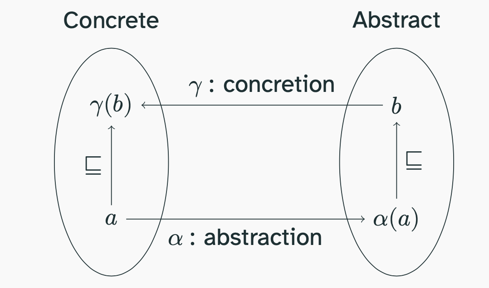

Bounded Static Analysis
Everything everywhere all at once: instead of running one input at a time, we push all inputs through the program together, a few steps deep. To make that possible we squeeze infinite sets of states into small abstract values, and Galois connections tell us exactly when that squeezing is safe.
The idea: all traces at once, up to a depth
What is bounded static analysis?
Breadth-first instead of depth-first
Picture a maze with a hidden trap somewhere (the bug). Dynamic analysis sends in one explorer, who follows a single route to the very end, then sends the next explorer, and so on. Bounded static analysis instead pours water in at the entrance: after one second the water stands in every corridor one step deep, after two seconds two steps deep. After n seconds you know about every corridor within n steps, all at once.
The catch: a real program is a maze with billions of entrances. You cannot track every drop of water, so you draw a rough map of where the water is. That rough map is called an abstraction, and most of this lecture is about drawing it without lying.
- Dynamic analysis (last lecture) picks one initial state $\sigma \in I_p$, runs the interpreter and gets one trace. Then it picks another input. Each run goes all the way down before the next one starts: depth-first.
- Bounded static analysis starts from the set of all initial states $I_p$ and applies the semantics to every state at the same time. After one round we hold every state reachable in one step, after $n$ rounds every state reachable in at most $n$ steps: breadth-first.
- Bounded means we stop after a fixed number of rounds $n$. All answers are about behaviours up to that depth. (Next lecture removes the bound.)
- The obstacle: these sets are enormous.
assertPositive(int num)alone has $2^{32}$ initial states, and a method taking an array has infinitely many. So we compute with finite abstractions that over-approximate the set of states (Part 2). - The payoff: one answer about all inputs. "No input reaches a division by zero within $n$ steps" is something no finite number of test runs can ever establish.
Recall the transition system $\langle \State_p, \delta_p, I_p \rangle$ of a program (Semantics) and trace selection from dynamic analysis:
"$\tau$ is a selected trace from $\sigma$ when it is one of the program's traces and it starts in $\sigma$." A dynamic analysis looks at one such $\tau$ at a time.
A bounded static analysis instead wants to talk about the whole set of traces that start in any initial state and are cut off at some length $k$:
"All traces of the program, from every possible start, that contain at most $k$ states." Definition 5.1 states this precisely; Part 3 shows how to compute an over-approximation of it with finite data.
Goal and notation
Prove "must", by failing to find a "may"
Think of a smoke detector. A good one never misses a fire, even if it sometimes beeps at burnt toast. So when it stays silent you can be sure: there is no fire. It never proves a fire (the beep may be toast), but its silence proves safety.
A static analysis works the same way. We want to prove "nothing bad happens on any run". We do it by searching, generously, for anything that might go wrong. If even the generous search finds nothing, nothing can go wrong.
- The goal of any static analysis is to soundly establish must properties: facts that hold on every trace. Bounded: on every trace up to a given length.
- We write $p, n \vdash_{\BSA}^{\must} Q$ for "the bounded static analysis claims that $Q$ holds on all traces of $p$ up to length $n$". Sound means: whenever it claims this, it is true.
- In practice we flip the question. Instead of "does $Q$ hold everywhere?" we ask "may there be a trace where $Q$ fails?". If our search for such a trace is complete (it never misses a real one) and it comes back empty, then $Q$ holds everywhere.
- The complete may-search is written $\vdash_{\BSA}^{\notmay}$ ("not-may"). It may raise false alarms (claim a bad trace might exist when none does) but never misses a real one.
- Example: $Q$ = "does not divide by zero". The not-may analysis searches for traces that divide by zero. Found none, so the method must not divide by zero. Found one: maybe a bug, maybe a false alarm.
Definition 5.1 Bounded trace semantics (Trace Terminology)
$$\Sem^{k}(p) = \{\, \tau \in \State_p^{\,m} \mid m \in [1, k],\ \tau_0 \in I_p,\ \forall i \in [1, m-1].\ \delta_p(\tau_{i-1}, \tau_i) \,\}$$"Sequences of between 1 and $k$ states that start in an initial state, where each state is a legal step from the one before."
Definition 5.2 Bounded may and must properties
$$p, k \models^{\may} Q \;\equiv\; \exists \tau \in \Sem^{k}(p).\ Q(\tau) \qquad\qquad p, k \models^{\must} Q \;\equiv\; \forall \tau \in \Sem^{k}(p).\ Q(\tau)$$"$Q$ may happen within $k$ when some short-enough trace satisfies it; $Q$ must happen within $k$ when every short-enough trace satisfies it." The double turnstile $\models$ means true, about the real program.
Definition 5.3 Sound must analysis, complete not-may analysis
An analysis is a procedure that outputs claims, written with the single turnstile $\vdash$ (derived by the analysis). A bounded must analysis is sound, and a bounded not-may analysis is complete, when for all $p, n, Q$:
$$p, n \vdash_{\BSA}^{\must} Q \implies p, n \models^{\must} Q \qquad\qquad p, n \models^{\may} Q \implies p, n \vdash_{\BSA}^{\notmay} Q$$"Whatever the must analysis claims is true" and "whatever may really happen, the not-may analysis reports".
Proposition 5.4 A complete not-may analysis gives a sound must analysis
Define the must analysis by negating the not-may analysis on the negated property:
$$p, n \vdash_{\BSA}^{\must} Q \;:\equiv\; \neg\big(p, n \vdash_{\BSA}^{\notmay} \neg Q\big)$$If $\vdash_{\BSA}^{\notmay}$ is complete, this must analysis is sound.
"Q is proven to hold everywhere exactly when the generous search for a trace violating Q finds nothing."
Proof
Assume $\neg(p, n \vdash^{\notmay} \neg Q)$. Completeness for the property $\neg Q$ says $p, n \models^{\may} \neg Q \implies p, n \vdash^{\notmay} \neg Q$. Its contrapositive gives $\neg(p, n \models^{\may} \neg Q)$, that is, $\neg \exists \tau \in \Sem^n(p).\ \neg Q(\tau)$. Pushing the negation through the quantifier: $\forall \tau \in \Sem^n(p).\ Q(\tau)$, which is $p, n \models^{\must} Q$. ∎
The same duality holds for the real properties: $\neg(p, n \models^{\may} Q) \equiv p, n \models^{\must} \neg Q$. Negation swaps "some" and "all".
Example: ruling out assertion errors
Look only at how each trace ends
To check that a cake recipe never ends with a burnt cake, you only need to look at the last moment of every way the baking could go. If none of those endings is "burnt", the recipe is safe, no matter what happened in between.
- A trace "ends in an assertion error" exactly when its last state is $\err(\text{`assertion error'})$. Call that predicate $\mathit{ae}$.
- The static question: does every trace avoid it? That is the must property $\neg \mathit{ae}$.
- We answer it with a not-may analysis for $\mathit{ae}$: search generously for a trace that ends in an assertion error. Nothing found, so no trace can.
- In JPAMB terms: nothing found gives
assertion error;no; found givesassertion error;maybe(it could be a false alarm), oryesif you trust your analysis. - Example: in
assertPositive(int num)the input $0$ produces the traceget, ifz, load, ifz, new, dup, invoke, throwfollowed by the error state: 9 elements. A complete analysis must report it, as long as it looks at least 9 deep.
Definition 5.5 The assertion-error predicate
$$\mathit{ae}(\tau) \;\equiv\; \tau_{|\tau| - 1} = \err(\text{`assertion error'})$$"The trace's last element (index $|\tau| - 1$, counting from 0) is the assertion-error state."
What we want to know, and how we get it:
$$p, n \models^{\must} \neg\mathit{ae} \;\equiv\; \forall \tau \in \Sem^{n}(p).\ \neg \mathit{ae}(\tau) \qquad\qquad \neg\big(p, n \vdash_{\BSA}^{\notmay} \mathit{ae}\big) \;\equiv\; p, n \vdash_{\BSA}^{\must} \neg \mathit{ae}$$"No trace up to length $n$ ends in an assertion error" is what we want; "the complete search for assertion-error traces up to length $n$ found none" is how Proposition 5.4 lets us claim it.
Worked example for assertPositive: the failing trace is $\tau = s_0 s_1 \cdots s_7\, \err(\text{`assertion error'})$ with $|\tau| = 9$, so $\mathit{ae}(\tau)$ holds and $p, 9 \models^{\may} \mathit{ae}$. With a bound of $5$ every trace is cut before the throw, so $p, 5 \models^{\must} \neg\mathit{ae}$ is true, even though $p$ clearly can fail: a bounded answer can only speak about its bound (topic 04).
Bounded answers have fine print
Bounded must is not must; bounded not-may is not not-may
A weather forecast for the next five days says "no storms". That is a true statement about five days, and it says nothing about day six. A bounded analysis gives answers with exactly this kind of fine print: "within $k$ steps".
A storm you do see in the forecast is real, though. Problems found within the bound stay problems; safety shown within the bound may break later.
- $\Sem(p)$ contains traces of any length (even infinite ones). $\Sem^{k}(p)$ keeps only those with at most $k$ states. Every bounded statement carries the fine print "within $k$ states".
- May results transfer up: a trace of length $\le k$ that divides by zero is a real trace of the program, so the bug is real.
- Must results do not:
for (int i = 0; i < 100; i++) {} assert false;has no assertion error in its first 50 states, yet every run fails eventually. - Non-termination (
*) is invisible to a bounded analysis: every trace is cut long before it could show that it runs forever. The best you get is "some traces are still running at depth $k$".countdown(n)with $n \lt 0$ loops (practically) forever, and $n = 1000$ simply takes long; at depth 50 they look the same. - Practical consequence for JPAMB: pick the bound large enough for the benchmark methods, and be less confident in
noanswers for methods whose traces were still running when you stopped.
Proposition 5.6 Bounded semantics grow with the bound
$$\Sem^{1}(p) \subseteq \Sem^{2}(p) \subseteq \cdots \subseteq \Sem^{k}(p) \subseteq \Sem^{k+1}(p) \subseteq \Sem(p)$$"Allowing longer traces only adds traces." The last inclusion uses the definition of $\Sem(p)$ as written in the notes, which contains every finite prefix of a run (only the length bound differs from Definition 5.1).
Proposition 5.7 Which answers transfer
For every program $p$, bound $k$ and property $Q$:
$$p \models^{\must} Q \implies p, k \models^{\must} Q \qquad\qquad p, k \models^{\may} Q \implies p \models^{\may} Q$$but in general $p, k \models^{\must} Q \not\Rightarrow p \models^{\must} Q$ and $p \models^{\may} Q \not\Rightarrow p, k \models^{\may} Q$.
"Facts for all traces still hold for the short ones, and a witness among the short traces is a witness overall. Not the other way around."
Proof
Both implications follow from $\Sem^{k}(p) \subseteq \Sem(p)$ (Proposition 5.6): a universal statement over a set holds over every subset, and an existential witness in a subset is a witness in the superset.
Counterexample to the converses: let $p$ be for (int i = 0; i < 100; i++) {} assert false; and $Q = \neg\mathit{ae}$. Every run takes more than 300 steps before the throw, so with $k = 50$ we have $p, 50 \models^{\must} \neg\mathit{ae}$ while $p \models^{\must} \neg \mathit{ae}$ is false. For the second converse use $Q = \mathit{ae}$: $p \models^{\may} \mathit{ae}$ holds but $p, 50 \models^{\may} \mathit{ae}$ does not. ∎
This is why the Trace Terminology note says a bounded must analysis is not a must analysis, and a bounded not-may analysis is not a not-may analysis:
$$p, k \vdash_{\mathbf{A}}^{\must} Q \not\Rightarrow p \vdash_{\mathbf{A}}^{\must} Q \qquad\qquad p \models^{\may} Q \not\Rightarrow p, k \vdash_{\mathbf{A}}^{\notmay} Q$$"A bounded proof of safety is not a proof of safety, and a bounded search can miss a real problem beyond its bound."
The many-step function $\Delta$
Stepping a whole set of traces at once
Imagine an album with one page per traveller's journey. Once a minute you go through the album and, for every journey, add a new page for every place the traveller could go next. A traveller at a fork in the road becomes two journeys. Do this $n$ times and the album contains every journey of up to $n$ steps. That "go through the album once" operation is $\Delta$.
- $\Delta$ takes a set of traces. For each trace it looks at the last state, finds every successor allowed by the single-step semantics $\delta$, and produces one longer trace per successor.
- Start: $\Delta^0 = I_p$, every initial state as a one-state trace.
- Then $\Delta^n = \Delta(\Delta^{n-1}) \cup \Delta^{n-1}$: keep the old traces and add their one-step extensions. The union keeps traces that already ended (in $\ok$ or an error), which have no successors, and keeps all prefixes.
- Example,
checkTheWrongThing(int a)restricted to $a \in \{-1, 0, 1\}$: $\Delta^0$ has 3 traces; the JVM is deterministic so $\Delta(\Delta^0)$ has 3 two-state traces and $\Delta^1$ has 6. - Why we cannot just compute this: with all $2^{32}$ values of
a, $\Delta^0$ alone has $2^{32}$ traces, and $\Delta^n$ roughly $2^{32}(n+1)$. With arrays, objects or longs, the sets are infinite. We need approximations (next topic) and abstractions (Part 2).
Definition 5.8 The many-step function
$$\Delta_p(T) \;=\; \{\, \tau s \mid \tau \in T,\ s \in \State_p,\ \delta_p(\tau_{|\tau|-1}, s) \,\}$$"For every trace $\tau$ in $T$ and every state $s$ that the last state of $\tau$ can step to, the trace $\tau$ followed by $s$." Here $\tau s$ appends $s$ to $\tau$. We drop the subscript $p$ when the program is clear.
Definition 5.9 $n$ rounds of stepping
$$\Delta_p^{0} = I_p \qquad\qquad \Delta_p^{n} = \Delta_p(\Delta_p^{n-1}) \cup \Delta_p^{n-1}$$Proposition 5.10 $\Delta$ is additive, hence monotone
$$\Delta\Big(\bigcup_{i} T_i\Big) = \bigcup_{i} \Delta(T_i) \qquad\text{and so}\qquad T \subseteq T' \implies \Delta(T) \subseteq \Delta(T')$$Proof
$\Delta(T)$ is defined trace by trace: $\Delta(T) = \bigcup_{\tau \in T} \Delta(\{\tau\})$. A union over $\bigcup_i T_i$ splits into the union of the unions over each $T_i$. Monotonicity: if $T \subseteq T'$ then $T' = T \cup T'$, so $\Delta(T') = \Delta(T) \cup \Delta(T') \supseteq \Delta(T)$. ∎
Proposition 5.11 $\Delta^n$ is the bounded semantics
$$\Delta_p^{n} = \Sem^{n+1}(p)$$"After $n$ rounds we hold exactly the traces with at most $n$ steps, that is, at most $n+1$ states."
Proof
By induction on $n$. Base: $\Delta^0 = I_p$ is the set of one-state traces starting in $I_p$, which is $\Sem^1(p)$.
Step: assume $\Delta^{n} = \Sem^{n+1}(p)$. ($\subseteq$) Elements of $\Delta^{n}$ are in $\Sem^{n+2}(p)$ by Proposition 5.6. An element of $\Delta(\Delta^{n})$ is $\tau s$ with $\tau \in \Sem^{n+1}(p)$ and $\delta(\tau_{|\tau|-1}, s)$, so it starts in $I_p$, every consecutive pair is a legal step, and it has at most $n+2$ states. ($\supseteq$) Take $\tau \in \Sem^{n+2}(p)$. If $|\tau| \le n+1$ then $\tau \in \Sem^{n+1}(p) = \Delta^{n}$. Otherwise $\tau = \tau' s$ with $|\tau'| = n+1$; $\tau'$ is a legal trace from $I_p$, so $\tau' \in \Delta^{n}$, and $\delta(\tau'_{n}, s)$, so $\tau \in \Delta(\Delta^{n})$. ∎
Over- and under-approximating $\Delta$
Errors that stay on the safe side, round after round
You cannot count every person at a festival. You can count the people you can clearly see: a guaranteed minimum. Or you can read the venue's capacity: a guaranteed maximum. The minimum tells you "at least this many came"; the maximum tells you "certainly no more than this".
Analyses do the same with traces. Fewer traces than the truth (only real ones) or more traces than the truth (all real ones plus some imaginary ones).
- Replace $\Delta$ by a cheaper step in every round: $\Delta^{\must}$ produces only real traces (a subset), $\Delta^{\may}$ produces at least all real traces (a superset).
- Repeating the approximation $n$ times keeps the error on the same side: under stays under, over stays over (Theorem 5.13).
- From the over-approximation we get a not-may analysis: "some trace in $\Delta^{\may,n}$ satisfies $Q$". It never misses a real $Q$-trace; it may report imaginary ones.
- From the under-approximation we get a not-must analysis: "every trace in $\Delta^{\must,n}$ satisfies $Q$". If $Q$ really holds everywhere it says so; it can also be fooled because it only looks at some traces.
- Dynamic analysis is an under-approximation: it follows only the inputs you chose. Static analysis with abstractions is an over-approximation: merging states adds behaviours.
- Since we want to prove the absence of errors (a must property), we use the not-may analysis on the negated property, exactly as in Proposition 5.4. In the lab of topic 05, switch between "exact", "under" and "over" to see both sides.
Definition 5.12 Approximate step functions
$\Delta^{\must}$ and $\Delta^{\may}$ under- and over-approximate one step:
$$\forall T.\quad \Delta^{\must}(T) \subseteq \Delta(T) \subseteq \Delta^{\may}(T)$$and we iterate them like $\Delta$: $\Delta^{\must,0} = \Delta^{\may,0} = I_p$, $\Delta^{\must,n} = \Delta^{\must}(\Delta^{\must,n-1}) \cup \Delta^{\must,n-1}$, and likewise for $\may$.
Theorem 5.13 The sandwich survives iteration
$$\forall n.\quad \Delta^{\must,n} \subseteq \Delta^{n} \subseteq \Delta^{\may,n}$$"After any number of rounds, the under-approximation still holds only real traces and the over-approximation still holds all of them."
Proof
Induction on $n$. Base: all three are $I_p$. Step, upper half: assume $\Delta^{n} \subseteq \Delta^{\may,n}$. Then
$$\Delta^{n+1} = \Delta(\Delta^{n}) \cup \Delta^{n} \subseteq \Delta(\Delta^{\may,n}) \cup \Delta^{\may,n} \subseteq \Delta^{\may}(\Delta^{\may,n}) \cup \Delta^{\may,n} = \Delta^{\may,n+1}$$The first $\subseteq$ uses that the exact $\Delta$ is monotone (Proposition 5.10) and the induction hypothesis; the second uses $\Delta \subseteq \Delta^{\may}$. Lower half, symmetric: $\Delta^{\must,n+1} = \Delta^{\must}(\Delta^{\must,n}) \cup \Delta^{\must,n} \subseteq \Delta(\Delta^{\must,n}) \cup \Delta^{\must,n} \subseteq \Delta(\Delta^{n}) \cup \Delta^{n}$. Note that we never needed the approximations themselves to be monotone. ∎
Definition 5.14 The two bounded analyses
$$p, n \vdash_{\BSA}^{\notmay} Q \;\equiv\; \exists \tau \in \Delta^{\may,n}.\ Q(\tau) \qquad\qquad p, n \vdash_{\BSA}^{\notmust} Q \;\equiv\; \forall \tau \in \Delta^{\must,n}.\ Q(\tau)$$"Not-may: some over-approximated trace satisfies $Q$. Not-must: all under-approximated traces satisfy $Q$."
Proposition 5.15 Both are complete
$$p, n{+}1 \models^{\may} Q \implies p, n \vdash_{\BSA}^{\notmay} Q \qquad\qquad p, n{+}1 \models^{\must} Q \implies p, n \vdash_{\BSA}^{\notmust} Q$$Proof
By Proposition 5.11, $\Sem^{n+1}(p) = \Delta^{n}$. A witness $\tau \in \Delta^{n}$ with $Q(\tau)$ lies in $\Delta^{\may,n}$ by Theorem 5.13. If $Q$ holds on all of $\Delta^{n}$ it holds on the subset $\Delta^{\must,n}$. ∎
Combining with Proposition 5.4: $\neg(p, n \vdash_{\BSA}^{\notmay} \neg Q)$ is a sound bounded must analysis for $Q$. That is the analysis we build: over-approximate, look for the bad property, and conclude its absence when it is not found.
Order and abstraction
The sign abstraction
Three labels instead of four billion numbers
A gardener does not write down every temperature reading of the year. She only notes whether it was below zero, exactly zero or above zero. Three labels cover infinitely many readings. She loses detail (was it 3 degrees or 30?) but can still answer the question she cares about: "did it ever freeze?"
- At one point in the program, an
intvariable can hold a set of values (one per trace). That set can be gigantic. - We only remember which signs occur: negative ($-$), zero ($0$), positive ($+$). The abstract value is a subset of $\Sign = \{-, 0, +\}$.
- Examples: $\alpha(\{1,2,3\}) = \{+\}$, $\alpha(\{0\}) = \{0\}$, $\alpha(\{-1, 3\}) = \{-, +\}$, $\alpha(\{-1,0,3\}) = \{-,0,+\}$.
- Size: a set of 32-bit integers is one of $2^{2^{32}}$ possible sets. A set of signs is one of only $2^3 = 8$. That is the whole point: we compute in a tiny world.
- What survives: enough to answer "can this divisor be zero?" and "can this value be positive?" (the questions behind
divide by zeroandassert x > 0). What is lost: magnitudes, exact values, and relations between variables.
Definition 5.16 Signs
$$\Sign = \{-, 0, +\} \qquad\qquad \mathit{sign}(n) = \begin{cases} - & n \lt 0 \\ 0 & n = 0 \\ + & n \gt 0 \end{cases}$$Definition 5.17 Abstracting a set of integers
$$\alpha : \pset{\Z} \to \pset{\Sign} \qquad\qquad \alpha(N) = \{\, \mathit{sign}(n) \mid n \in N \,\}$$"The abstraction of a set of integers is the set of signs that occur in it."
The opposite direction, $\gamma(S) = \{ n \in \Z \mid \mathit{sign}(n) \in S \}$ ("every integer whose sign is allowed"), tells us what an abstract value means. Topics 12 and 14 make the pair precise.
Partially ordered sets
Comparing how much we know
Some things compare naturally: a shoebox fits inside a suitcase. Others do not: a long umbrella and a wide hat box, neither fits in the other. A partial order is a "fits inside" relation where some pairs are simply incomparable, and that is perfectly fine.
- Abstract values differ in precision: $\{+\}$ says more than $\{0, +\}$, which says more than $\{-,0,+\}$. We order them by $\subseteq$: smaller set, more information.
- An order needs three rules: everything is below itself (reflexive); two things below each other are equal (antisymmetric); below-below is below (transitive).
- "Partial" because some pairs are incomparable: $\{+\}$ and $\{0\}$, neither contains the other.
- Familiar posets: $(\Z, \le)$; also $(\Z, \ge)$, the same set ordered backwards; the booleans $(\{\mathtt{tt}, \mathtt{ff}\}, \Rightarrow)$, where $\mathtt{ff} \Rightarrow \mathtt{tt}$ so $\mathtt{ff}$ is the bottom; and $(\pset{\Sign}, \subseteq)$.
- Non-examples: $(\Z, \lt)$ is not reflexive; "$a$ divides $b$" on $\Z$ is not antisymmetric ($2 \mid -2$ and $-2 \mid 2$ but $2 \ne -2$); "is friends with" is neither antisymmetric nor transitive.
- A function is monotone if it preserves the order: more information in, more information out. $S \mapsto S \cup \{0\}$ is monotone on sign sets; boolean negation is not monotone for $\Rightarrow$. Analyses are built from monotone functions, which is what makes the proofs in Part 3 work.
Definition 5.18 Partially ordered set
A poset is a pair $(L, \sqsubseteq)$ of a set $L$ and a relation $\sqsubseteq \subseteq L \times L$ such that
$$\begin{aligned} &\text{reflexive} && \forall a \in L.\ a \sqsubseteq a \\ &\text{antisymmetric} && \forall a, b \in L.\ a \sqsubseteq b \land b \sqsubseteq a \implies a = b \\ &\text{transitive} && \forall a, b, c \in L.\ a \sqsubseteq b \land b \sqsubseteq c \implies a \sqsubseteq c \end{aligned}$$It is a total order if moreover $a \sqsubseteq b \lor b \sqsubseteq a$ for all $a, b$. We write $a \sqsubset b$ for $a \sqsubseteq b \land a \ne b$.
Definition 5.19 Monotone function
$$f : (L, \sqsubseteq_L) \to (M, \sqsubseteq_M) \text{ is monotone} \iff \forall a, b \in L.\ a \sqsubseteq_L b \implies f(a) \sqsubseteq_M f(b)$$"If you know less going in, you know less (or equally little) coming out."
Checking the three rules on these examples.
| Poset | Reflexive | Antisymmetric | Transitive | Total? |
|---|---|---|---|---|
| $(\Z, \le)$ | $a \le a$ | $a \le b \le a \Rightarrow a = b$ | yes | yes |
| $(\Z, \ge)$ | yes | yes | yes | yes |
| $(\{\mathtt{tt},\mathtt{ff}\}, \Rightarrow)$ | $x \Rightarrow x$ | only $\mathtt{tt} \Rightarrow \mathtt{tt}$, $\mathtt{ff} \Rightarrow \mathtt{ff}$ go both ways | yes (chaining implications) | yes: $\mathtt{ff} \sqsubseteq \mathtt{tt}$ |
| $(\pset{\Sign}, \subseteq)$ | $S \subseteq S$ | $S \subseteq T \subseteq S \Rightarrow S = T$ | yes | no: $\{+\}, \{0\}$ |
Lattices: join and meet
The smallest box that fits both, the biggest box inside both
Given two boxes, the join is the smallest box both fit into, and the meet is the biggest box that fits into both. A lattice is a world where, for any two things, both of these always exist and are unique.
- When two paths of the program meet at the same instruction, the analysis holds two abstract values $a$ and $b$ and must keep one. It needs a value that covers both (an upper bound) and loses as little as possible (the least one): the join $a \join b$.
- The meet $a \meet b$ is the most precise value below both: what both pieces of knowledge agree on. It shows up when a branch condition sharpens what we know ($x \in \{-,0,+\}$ meet "$x \gt 0$" gives $\{+\}$).
- $\bot$ (bottom) is below everything: "no value at all", which in an analysis means unreachable. $\top$ (top) is above everything: "could be anything".
- Not every lattice has $\bot$ and $\top$: $(\Z, \le)$ is a lattice (join is $\max$, meet is $\min$) without a smallest or largest integer. Every finite lattice has both, and every lattice we use in this course is finite or complete.
Definition 5.20 Bounds
Let $(L, \sqsubseteq)$ be a poset and $a, b \in L$. An upper bound of $a, b$ is any $u$ with $a \sqsubseteq u$ and $b \sqsubseteq u$. A least upper bound (join) $a \join b$ is an upper bound below every other upper bound:
$$a \sqsubseteq a \join b \;\land\; b \sqsubseteq a \join b \;\land\; \forall c.\ (a \sqsubseteq c \land b \sqsubseteq c) \implies a \join b \sqsubseteq c$$Dually, the greatest lower bound (meet) $a \meet b$ satisfies $a \meet b \sqsubseteq a$, $a \meet b \sqsubseteq b$ and $\forall c.\ (c \sqsubseteq a \land c \sqsubseteq b) \implies c \sqsubseteq a \meet b$. For a subset $X \subseteq L$ we write $\lub X$ and $\glb X$ for its least upper and greatest lower bound.
Proposition 5.21 Joins and meets are unique
If $j$ and $j'$ are both least upper bounds of $a, b$, then $j = j'$.
Proof
$j'$ is an upper bound and $j$ is least, so $j \sqsubseteq j'$. Symmetrically $j' \sqsubseteq j$. Antisymmetry gives $j = j'$. The same argument works for meets. ∎
Definition 5.22 Lattice, complete lattice
A poset is a lattice $(L, \sqsubseteq, \join, \meet)$ if every pair of elements has a join and a meet. It is complete if every subset $X \subseteq L$ (including $\emptyset$ and $L$) has $\lub X$ and $\glb X$. A complete lattice has a least and a greatest element:
$$\bot = \glb L = \lub \emptyset \qquad\qquad \top = \lub L = \glb \emptyset$$Every finite non-empty lattice is complete (fold the binary join over the finitely many elements).
Proposition 5.23 Lattice laws
In every lattice: $\join$ and $\meet$ are commutative, associative and idempotent ($a \join a = a$), satisfy absorption ($a \join (a \meet b) = a$), and
$$a \sqsubseteq b \iff a \join b = b \iff a \meet b = a$$With $\top$ and $\bot$: $\ \top \meet a = a = a \join \bot,\quad \top \join a = \top,\quad a \meet \bot = \bot.$
Proof (of the middle law and one identity)
If $a \sqsubseteq b$, then $b$ is an upper bound of $a, b$, and any upper bound $c$ of both has $b \sqsubseteq c$; so $b$ is the least upper bound: $a \join b = b$. Conversely, $a \join b = b$ gives $a \sqsubseteq a \join b = b$. The meet version is dual.
$\top \meet a = a$: since $a \sqsubseteq \top$, the middle law (meet version) gives $a \meet \top = a$. ∎
Hasse diagrams
Draw only the direct steps up
A Hasse diagram is like an org chart: you draw a line only between a person and their direct boss. "Reports to the boss's boss" is implied by following lines upward. Bigger things are drawn higher.
- Draw each element once, larger ones above smaller ones, and a line only when one element covers another (nothing in between).
- Reflexivity (loops) and transitive edges are left out. $\{+\} \subseteq \{+,0,-\}$ is true, but not drawn, because $\{+,0\}$ and $\{+,-\}$ sit in between.
- Reading a join off the picture: walk upward from both elements; the join is the unique lowest place both can reach. If two different lowest places exist, there is no join. Meets: walk downward.
- They are called lattices because these diagrams look like a wooden garden lattice.

Definition 5.24 Covering relation, Hasse diagram
$$a \lessdot b \iff a \sqsubset b \;\land\; \neg \exists c.\ a \sqsubset c \sqsubset b$$"$b$ covers $a$: $b$ is strictly above $a$ with nothing strictly in between."
The Hasse diagram of a finite poset is the graph of $\lessdot$, drawn so that every edge goes upward. In a finite poset, $\sqsubseteq$ is the reflexive and transitive closure of $\lessdot$: a chain from $a$ to $b$ can always be refined until each link is a cover, so nothing is lost by drawing only covers.
The sign lattice
A cube standing on one corner
Our eight sign sets form a tidy cube balanced on a corner. At the very bottom: "no value at all". At the very top: "could be anything". Merging two pieces of knowledge means taking everything either allows; combining two constraints means keeping only what both allow.
- Order: $\subseteq$. Join: union $\cup$. Meet: intersection $\cap$. Bottom $\bot = \emptyset$. Top $\top = \{-, 0, +\}$.
- $\{+\} \join \{0\} = \{0, +\}$: one path says positive, the other says zero, so afterwards it is "zero or positive".
- $\{-, 0\} \meet \{0, +\} = \{0\}$: if both facts hold, the value must be zero. $\{+\} \meet \{-\} = \emptyset$: a contradiction, no value is both, so that program point is unreachable.
- The lattice has height 3: any strictly increasing chain has at most 4 elements, e.g. $\emptyset \subset \{0\} \subset \{0,+\} \subset \{-,0,+\}$. A variable's abstract value can grow at most three times. In the next lecture this is why unbounded analyses with signs terminate quickly.
Proposition 5.25 Powersets are complete lattices
For every set $X$, $(\pset{X}, \subseteq)$ is a complete lattice with
$$\lub \mathcal{S} = \bigcup \mathcal{S} \qquad \glb \mathcal{S} = \bigcap \mathcal{S}\ (\text{with } \textstyle\bigcap \emptyset = X) \qquad \bot = \emptyset \qquad \top = X$$Proof
$\bigcup \mathcal{S}$ contains every $S \in \mathcal{S}$, so it is an upper bound. Any upper bound $U$ contains every $S \in \mathcal{S}$ and so contains their union: it is the least. Dually, $\bigcap \mathcal{S}$ is the greatest lower bound. ∎
Instantiating $X = \Sign$ gives the sign lattice
$$\big(\pset{\Sign},\ \subseteq,\ \cup,\ \cap,\ \emptyset,\ \{-, 0, +\}\big)$$"Sign sets ordered by inclusion, joined by union, met by intersection, from the empty set up to all three signs." Its Hasse diagram is the cube in topic 10.
Galois connections
When describing and imagining fit together exactly
You describe a crowd to a friend on the phone: "a few hundred people, mostly adults". That is the abstraction. Your friend imagines every crowd that fits the description: the concretisation. A good description never rules out the crowd you actually saw, and it is as sharp as your vocabulary allows. A Galois connection is the precise rule that makes describing and imagining fit together.
- Two ordered worlds: the concrete $C$ (sets of integers, states or traces, ordered by $\subseteq$) and the abstract $A$ (e.g. sign sets). $\alpha : C \to A$ describes, $\gamma : A \to C$ says what a description means.
- The one law: $\alpha(c) \sqsubseteq a \iff c \sqsubseteq \gamma(a)$. "The description of $c$ is at least as sharp as $a$" exactly when "$c$ is among the things $a$ allows".
- It is lossy: $\gamma(\alpha(\{1,2,3\})) = \gamma(\{+\})$ is every positive integer. But it never loses the truth: $c \subseteq \gamma(\alpha(c))$.
- From the one law, many useful ones follow for free (Theorem 5.27): both maps are monotone, going round-trip loses at most once, $\alpha$ turns unions into joins.
- Why we care: $\alpha(c)$ is automatically the best description of $c$, and every soundness question about infinite concrete sets can be rewritten as a check in the small abstract world.

Definition 5.26 Galois connection
Let $(C, \sqsubseteq_C)$ and $(A, \sqsubseteq_A)$ be posets. A pair of functions $\alpha : C \to A$ and $\gamma : A \to C$ is a Galois connection, written $(C, \sqsubseteq_C) \galois (A, \sqsubseteq_A)$, when
$$\forall c \in C,\ a \in A.\quad \alpha(c) \sqsubseteq_A a \iff c \sqsubseteq_C \gamma(a)$$"Abstracting $c$ lands below $a$ exactly when $c$ lies below what $a$ means."
Theorem 5.27 The laws you get for free
For every Galois connection and all $c, c_1, c_2 \in C$, $a, a_1, a_2 \in A$:
$$\begin{aligned} &\text{(L1) extensive} && c \sqsubseteq_C \gamma(\alpha(c)) && \text{abstracting then concretising only grows}\\ &\text{(L2) reductive} && \alpha(\gamma(a)) \sqsubseteq_A a && \text{concretising then abstracting only shrinks}\\ &\text{(L3) monotone} && c_1 \sqsubseteq c_2 \Rightarrow \alpha(c_1) \sqsubseteq \alpha(c_2),\ \ a_1 \sqsubseteq a_2 \Rightarrow \gamma(a_1) \sqsubseteq \gamma(a_2) \\ &\text{(L4)} && \alpha(\gamma(\alpha(c))) = \alpha(c) && \text{we do not keep losing information}\\ &\text{(L5)} && \gamma(\alpha(\gamma(a))) = \gamma(a) && \text{in either direction}\\ &\text{(L6)} && \alpha(c_1 \join_C c_2) = \alpha(c_1) \join_A \alpha(c_2) && \alpha \text{ preserves joins}\\ &\text{(L7)} && \gamma(a_1 \meet_A a_2) = \gamma(a_1) \meet_C \gamma(a_2) && \gamma \text{ preserves meets} \end{aligned}$$(L6) and (L7) hold whenever the joins and meets involved exist.
Proof
(L1) Take $a = \alpha(c)$ in the defining law: $\alpha(c) \sqsubseteq \alpha(c)$ holds by reflexivity, so $c \sqsubseteq \gamma(\alpha(c))$.
(L2) Take $c = \gamma(a)$: $\gamma(a) \sqsubseteq \gamma(a)$, so $\alpha(\gamma(a)) \sqsubseteq a$.
(L3) If $c_1 \sqsubseteq c_2$ then $c_1 \sqsubseteq c_2 \sqsubseteq \gamma(\alpha(c_2))$ by (L1), and the law turns $c_1 \sqsubseteq \gamma(\alpha(c_2))$ into $\alpha(c_1) \sqsubseteq \alpha(c_2)$. For $\gamma$: $\alpha(\gamma(a_1)) \sqsubseteq a_1 \sqsubseteq a_2$ by (L2), and the law gives $\gamma(a_1) \sqsubseteq \gamma(a_2)$.
(L4) Applying monotone $\alpha$ to (L1) gives $\alpha(c) \sqsubseteq \alpha(\gamma(\alpha(c)))$; (L2) with $a = \alpha(c)$ gives the other direction; antisymmetry. (L5) is symmetric.
(L6) For every $a$: $\alpha(c_1 \join c_2) \sqsubseteq a \iff c_1 \join c_2 \sqsubseteq \gamma(a) \iff c_1 \sqsubseteq \gamma(a) \land c_2 \sqsubseteq \gamma(a) \iff \alpha(c_1) \sqsubseteq a \land \alpha(c_2) \sqsubseteq a \iff \alpha(c_1) \join \alpha(c_2) \sqsubseteq a$. Two elements with exactly the same upper bounds are equal (take $a$ to be each of them). (L7) is the dual argument with lower bounds. ∎
Proposition 5.28 $\gamma$ and joins: an inequality
$$\gamma(a_1) \join_C \gamma(a_2) \;\sqsubseteq_C\; \gamma(a_1 \join_A a_2)$$"Merging in the abstract world can only add meaning, never remove it." Proof: $a_i \sqsubseteq a_1 \join a_2$ and $\gamma$ is monotone, so $\gamma(a_1 \join a_2)$ is an upper bound of both. For signs it is even an equality; for intervals it is strict: $\gamma([0,0] \join [2,2]) = \{0,1,2\} \supsetneq \{0\} \cup \{2\}$.
Definition 5.29 Galois insertion
A Galois connection is an insertion when $\alpha(\gamma(a)) = a$ for all $a$ (equivalently $\gamma$ is injective, or $\alpha$ is surjective): no two abstract values mean the same thing. The sign abstraction is one (topic 14).
Adjunctions and testing
Parse, pretty-print, repeat
Photocopy a document, then photocopy the copy. The first copy loses a little (smudges, a crooked page). But a copy of a copy is no worse than the copy you made from it in the first place, if the machine is any good. Galois connections promise exactly this: you can lose information once, but not over and over.
- Galois connections are a special case of a mathematical idea called an adjunction, one of the most useful and least appreciated structures in computer science.
- A testing example from the notes: a pretty-printer
prettyand a parserparse. We would likeparse(pretty(a)) == a, but it is not always true: line numbers or redundant details get lost. - What should always hold is the "lose it only once" law, in both directions:
# Most of the time parse(pretty(a)) == a # Always pretty(parse(pretty(a))) == pretty(a) # Bonus, for all strings s: parse(pretty(parse(s))) == parse(s) - Read
parseas $\alpha$ (it forgets spacing and redundant parentheses) andprettyas $\gamma$ (it picks one canonical text). The two laws are (L5) $\gamma \alpha \gamma = \gamma$ and (L4) $\alpha \gamma \alpha = \alpha$. - These laws are perfect for property-based testing (Hypothesis): generate random values or strings and check the equations.
Without an order on strings and syntax trees this is an analogy rather than a Galois connection, but the algebra is the same. Writing $\alpha = \mathtt{parse}$ and $\gamma = \mathtt{pretty}$:
$$\gamma \circ \alpha \circ \gamma = \gamma \qquad\qquad \alpha \circ \gamma \circ \alpha = \alpha$$"Printing what you parsed from a printout gives the same printout; parsing what you printed from a parse gives the same parse."
Both say that $\gamma \circ \alpha$ (normalise a text) and $\alpha \circ \gamma$ (round-trip a tree) are idempotent: applying them twice equals applying them once. In a Galois connection, $\gamma \circ \alpha$ is called the associated closure operator on $C$: extensive, monotone and idempotent.
The sign Galois connection
Integers on one side, sign sets on the other
$\alpha$ looks at every number in your set and ticks the box for its sign. $\gamma$ goes the other way: from the ticked boxes to "every integer with one of these signs". Ticking boxes then reading them back gives a bigger set than you started with, never a smaller one.
- $\alpha(N)$ contains $+$ if $N$ has a positive number, $-$ if it has a negative number, $0$ if it contains $0$.
- $\gamma(S)$ is the union of the "sign classes" that $S$ allows: all positives if $+ \in S$, all negatives if $- \in S$, and $0$ if $0 \in S$.
- Worked example from the notes: $c = \{0, 1\}$. $\alpha(c) = \{0, +\}$. Any $a$ above it, e.g. $\{0,+\} \sqsubseteq \{-,0,+\}$, concretises to a superset of $c$: $\{0,1\} \subseteq \gamma(\{0,+\}) = \{n \mid n \ge 0\} \subseteq \gamma(\{-,0,+\}) = \Z$.
- In code we never build $\gamma(S)$ (it is infinite); we test membership instead:
value in signsetchecks $\mathit{sign}(v) \in S$. - Testing the abstraction with the Galois laws: for random sets $X$, check $X \subseteq \gamma(\alpha(X))$, i.e. every element of $X$ is in its own abstraction.
Definition 5.30 Abstraction and concretion for signs
$$\begin{aligned} \alpha(N) &= \{\, + \mid n \in N,\ n \gt 0 \,\} \cup \{\, - \mid n \in N,\ n \lt 0 \,\} \cup \{\, 0 \mid 0 \in N \,\} \\ \gamma(S) &= \{\, n \in \Z \mid n \gt 0,\ + \in S \,\} \cup \{\, n \in \Z \mid n \lt 0,\ - \in S \,\} \cup \{\, 0 \mid 0 \in S \,\} \end{aligned}$$"$\alpha$ collects the signs that occur; $\gamma$ collects every integer whose sign is allowed." Equivalently $\gamma(S) = \{ n \mid \mathit{sign}(n) \in S \}$.
Proposition 5.31 It is a Galois insertion
$$(\pset{\Z}, \subseteq) \galois (\pset{\Sign}, \subseteq) \qquad\text{and}\qquad \alpha(\gamma(S)) = S$$Proof
$\alpha(N) \subseteq S \iff \forall n \in N.\ \mathit{sign}(n) \in S \iff \forall n \in N.\ n \in \gamma(S) \iff N \subseteq \gamma(S)$.
Insertion: each sign class is non-empty ($1$, $0$, $-1$ are witnesses), so every sign in $S$ occurs in $\gamma(S)$ and no other sign does: $\alpha(\gamma(S)) = S$. ∎
The notes' worked example as a chain, with the law at each step:
$$\{0, 1\} \;\subseteq\; \gamma(\alpha(\{0,1\})) = \gamma(\{0, +\}) = \Z^{\ge 0} \;\subseteq\; \gamma(\{-,0,+\}) = \Z$$"Extensive (L1), then monotone (L3) for $\{0,+\} \subseteq \{-,0,+\}$."
to_sign code. Read it with the signs the right way round, as above. Fixing only one of the two does break the law: the lab in topic 12 lets you pair the correct $\alpha$ with the notes' $\gamma$ and watch it fail.Abstract operations
Arithmetic on vague knowledge
You know two numbers only by their signs. Positive plus positive? Positive, for sure. Positive plus negative? Could be anything, so the honest answer is "I don't know". Abstract arithmetic is arithmetic on that kind of vague knowledge, with one rule: never claim more certainty than you have. Saying "I don't know" too often is allowed; being wrong is not.
- First lift the concrete operation to sets: $A + B = \{a + b \mid a \in A, b \in B\}$. Example: $\{1,3\} + \{0,10\} = \{1, 3, 11, 13\}$.
- The abstract version $+_{\Sign}$ works on sign sets. For single signs: $\{+\} + \{+\} = \{+\}$, $\{0\} + \{s\} = \{s\}$, $\{+\} + \{-\} = \{-,0,+\}$ (both $5 + (-2)$ and $2 + (-5)$ and $2 + (-2)$ are possible). For sets, take the union over all pairs of signs.
- Soundness of the abstract operation: the real results must always be inside what the abstract result means. Thanks to the Galois connection this is checkable without infinite sets: abstract the real result and compare in the small lattice.
- The best abstract operation is "concretise, compute, abstract": $\alpha(\gamma(S) + \gamma(T))$. The notes' addition table is exactly that.
Definition 5.32 Lifted operation
$$A \oplus_{\pset{\Z}} B = \{\, a \oplus b \mid a \in A,\ b \in B \,\} \qquad \text{e.g.}\quad \{1,3\} +_{\pset{\Z}} \{0,10\} = \{1, 3, 11, 13\}$$Definition 5.33 Sound abstract operation
$\oplus^{\#} : A \times A \to A$ is a sound abstraction of $\oplus$ when it never under-approximates:
$$\forall A, B \subseteq \Z.\quad A \oplus_{\pset{\Z}} B \;\subseteq\; \gamma\big(\alpha(A) \oplus^{\#} \alpha(B)\big)$$Proposition 5.34 The $\alpha$-form, and soundness on abstract inputs
(a) The condition of Definition 5.33 is equivalent to
$$\alpha\big(A \oplus_{\pset{\Z}} B\big) \;\sqsubseteq\; \alpha(A) \oplus^{\#} \alpha(B)$$"Abstracting the true result gives something at least as precise as computing abstractly." No infinite sets needed: both sides live in the 8-element lattice.
(b) If moreover $\oplus^{\#}$ is monotone, then for all abstract $S, T$: $\ \gamma(S) \oplus_{\pset{\Z}} \gamma(T) \subseteq \gamma(S \oplus^{\#} T)$.
Proof
(a) is the Galois law with $c = A \oplus B$ and $a = \alpha(A) \oplus^{\#} \alpha(B)$.
(b) Put $A = \gamma(S)$, $B = \gamma(T)$ in (a): $\alpha(\gamma(S) \oplus \gamma(T)) \sqsubseteq \alpha(\gamma(S)) \oplus^{\#} \alpha(\gamma(T)) \sqsubseteq S \oplus^{\#} T$, using (L2) and monotonicity. The Galois law turns this back into the inclusion. ∎
Definition 5.35 Best abstract transformer
$$S \oplus^{\mathrm{best}} T \;=\; \alpha\big(\gamma(S) \oplus_{\pset{\Z}} \gamma(T)\big)$$It is sound, and every sound monotone $\oplus^{\#}$ satisfies $S \oplus^{\mathrm{best}} T \sqsubseteq S \oplus^{\#} T$ (by Proposition 5.34(b) and the Galois law). For signs it distributes over the elements: $S \oplus^{\mathrm{best}} T = \bigcup_{s \in S,\ t \in T} \{s\} \oplus^{\mathrm{best}} \{t\}$.
Proposition 5.36. Over the mathematical integers, the addition table below (the one in the notes) is exactly $\oplus^{\mathrm{best}}$ on single signs (each entry is witnessed by small numbers, e.g. $2 + (-1) \gt 0$, $1 + (-1) = 0$, $1 + (-2) \lt 0$ for the $\top$ entry).
| $+$ | $\{-\}$ | $\{0\}$ | $\{+\}$ |
|---|---|---|---|
| $\{-\}$ | $\{-\}$ | $\{-\}$ | $\top$ |
| $\{0\}$ | $\{-\}$ | $\{0\}$ | $\{+\}$ |
| $\{+\}$ | $\top$ | $\{+\}$ | $\{+\}$ |
"Row sign plus column sign." $\top = \{-,0,+\}$. For sets of signs, take the union over all pairs.
Bounded abstract interpretation
Stepping in the abstract
One local check, soundness for every depth
Instead of moving every drop of water, you move the sketch: each round you shade the map one step further. If every single shading step covers at least the corridors the real water could reach, then after any number of rounds the sketch still covers all the real water. You check one step once, and get the guarantee for every depth.
- Pick an abstract domain $A$ with a Galois connection to sets of traces, and an abstract step $\Delta_A : A \to A$ that imitates $\Delta$.
- Iterate it exactly like $\Delta$: start from $\alpha(I_p)$; each round apply $\Delta_A$ and join with the previous round.
- The theorem: the real traces of up to $n$ steps are all inside $\gamma(\Delta_A^n)$. So if no error state appears in $\Delta_A^n$, no real trace up to depth $n$ ends in an error.
- What you must check, once per instruction: the abstract step covers the concrete step. Thanks to the Galois connection you can check it in the abstract world: $\alpha(\Delta(T)) \sqsubseteq \Delta_A(\alpha(T))$, "abstracting the real successors is at least as precise as the abstract successors".
- The infinite sets only appear in the proof. At run time the analysis only touches small abstract values.
Definition 5.37 Bounded abstract interpretation
Given $(\pset{\Trace}, \subseteq) \galois (A, \sqsubseteq_A)$ and an abstract step $\Delta_A : A \to A$:
$$\Delta_A^{0} = \alpha(I_p) \qquad\qquad \Delta_A^{n} = \Delta_A(\Delta_A^{n-1}) \join_A \Delta_A^{n-1}$$Theorem 5.38 Soundness of bounded abstract interpretation
If $\Delta_A$ covers $\Delta$ on every abstract value,
$$\text{(A)}\qquad \forall a \in A.\quad \Delta(\gamma(a)) \subseteq \gamma(\Delta_A(a)),$$then for every $n$: $\quad\Delta^{n} \subseteq \gamma(\Delta_A^{n})$.
"Every real trace of up to $n$ steps is described by the abstract result after $n$ rounds."
Proof
Induction on $n$. Base: $\Delta^0 = I_p \subseteq \gamma(\alpha(I_p)) = \gamma(\Delta_A^0)$ by (L1).
Step: assume $\Delta^{n} \subseteq \gamma(\Delta_A^{n})$. Then
$$\begin{aligned} \Delta^{n+1} = \Delta(\Delta^{n}) \cup \Delta^{n} &\subseteq \Delta(\gamma(\Delta_A^{n})) \cup \gamma(\Delta_A^{n}) && \Delta \text{ monotone (Prop. 5.10), IH}\\ &\subseteq \gamma(\Delta_A(\Delta_A^{n})) \cup \gamma(\Delta_A^{n}) && \text{condition (A)}\\ &\subseteq \gamma(\Delta_A(\Delta_A^{n}) \join_A \Delta_A^{n}) = \gamma(\Delta_A^{n+1}) && \text{Prop. 5.28 } (\gamma \text{ monotone}) \end{aligned}$$ ∎Lemma 5.39 The local condition in the abstract world
The notes check soundness on concrete sets instead:
$$\text{(B)}\qquad \forall T.\quad \alpha(\Delta(T)) \sqsubseteq_A \Delta_A(\alpha(T)) \qquad\iff\qquad \forall T.\quad \Delta(T) \subseteq \gamma(\Delta_A(\alpha(T)))$$(the two forms are the Galois law). If (B) holds and $\Delta_A$ is monotone, then (A) holds, so Theorem 5.38 applies.
Proof
Let $a \in A$ and $T = \gamma(a)$. By (L1), (B) and (L3): $\Delta(\gamma(a)) \subseteq \gamma(\alpha(\Delta(\gamma(a)))) \subseteq \gamma(\Delta_A(\alpha(\gamma(a))))$. By (L2) $\alpha(\gamma(a)) \sqsubseteq a$, so monotone $\Delta_A$ and $\gamma$ give $\gamma(\Delta_A(\alpha(\gamma(a)))) \subseteq \gamma(\Delta_A(a))$. ∎
Corollary 5.40. The not-may analysis $p, n \vdash^{\notmay} Q \equiv \exists \tau \in \gamma(\Delta_A^{n}).\ Q(\tau)$ is complete, so its negation on $\neg Q$ is a sound bounded must analysis (Proposition 5.4). In practice $Q$ only looks at the last state, and we check it directly on the abstract value.
The state abstraction
Forget the journey, keep where you are
Instead of remembering every traveller's whole journey, only remember where each traveller is standing right now. To find out whether anyone has fallen into the river, that is all you need, and it is far less to write down.
- $\alpha$ keeps only the last state of each trace. $\gamma$ of a set of states is every trace that ends in one of them (with any history, real or not).
- To step, we only need the last state anyway: $\Delta_{\State}$ maps a set of states to the set of their successors.
- This abstraction loses no precision for one step: abstracting the real successors gives exactly $\Delta_{\State}$ of the abstraction (Proposition 5.43). The lost history never mattered for what happens next.
- Iterating, $\Delta_{\State}^n$ is the set of states reachable in at most $n$ steps. If $\err(\text{`assertion error'})$ is not among them, no trace up to depth $n$ ends in an assertion error.
- It is still an infinite set in general, but it is the foundation the next abstractions stand on.
Definition 5.41 State abstraction
$$(\pset{\Trace}, \subseteq) \galois (\pset{\State}, \subseteq) \qquad \alpha(T) = \{\, \tau_{|\tau|-1} \mid \tau \in T \,\} \qquad \gamma(S) = \{\, \tau \in \Trace \mid \tau_{|\tau|-1} \in S \,\}$$"Abstract a set of traces to the set of their end states; a set of states means every trace ending in one of them."
It is a Galois connection: $\alpha(T) \subseteq S \iff$ every trace in $T$ ends in $S$ $\iff T \subseteq \gamma(S)$.
Definition 5.42 Stepping states
$$\Delta_{\State}(S) = \{\, s' \mid s \in S,\ \delta(s, s') \,\} \qquad \Delta_{\State}^{0} = \alpha(I_p) = I_p \qquad \Delta_{\State}^{n} = \Delta_{\State}(\Delta_{\State}^{n-1}) \cup \Delta_{\State}^{n-1}$$Proposition 5.43 The state abstraction is exact for one step
$$\alpha(\Delta(T)) = \Delta_{\State}(\alpha(T))$$Proof that $\Delta_{\State}$ is an abstract operation of $\Delta$
$\alpha(\Delta(T)) = \{ \text{last}(\tau s) \mid \tau \in T, \delta(\text{last}(\tau), s)\} = \{ s \mid \tau \in T, \delta(\text{last}(\tau), s)\} = \{ s \mid s_0 \in \alpha(T), \delta(s_0, s)\} = \Delta_{\State}(\alpha(T))$. In particular condition (B) of Lemma 5.39 holds, and $\Delta_{\State}$ is monotone. ∎
Corollary 5.44 Checking assertion errors on states
$$\err(\text{`assertion error'}) \notin \Delta_{\State}^{n} \implies \neg \exists \tau \in \Delta^{n}.\ \mathit{ae}(\tau)$$Proof
By Theorem 5.38, $\Delta^{n} \subseteq \gamma(\Delta_{\State}^{n})$, so every trace in $\Delta^{n}$ ends in a state of $\Delta_{\State}^{n}$. If $\tau$ ended in the error state, that state would be in $\Delta_{\State}^{n}$. (The notes phrase it as: $\{\tau\, \err(\ldots)\} \subseteq \Delta^n$ implies $\alpha$ of it, $\{\err(\ldots)\}$, is contained in $\Delta_{\State}^n$.) ∎
The per-instruction abstraction
Group the states by program counter
Sort the travellers by the station they are standing at. Everyone at the same station takes the same trains next, so you announce departures once per station instead of once per person.
- For now, forget the call stack: a state is a single frame $\langle \lambda, \sigma, \iota \rangle$ (locals, operand stack, program counter). Calls come in later lectures.
- Group the set of states by their $\iota$: a map from program counters to sets of states. All states in a group execute the same instruction.
- $\Delta_{\Pc}$ steps a whole group with one instruction, $\Delta_\iota$, and sends each successor to the group of its new program counter, where it is merged ($\cup$) with what is already there.
- No information is lost yet: grouping is just a reorganisation. The gain is structural: from here on we can summarise each group separately, which is exactly what the next abstraction does.
Definition 5.45 Per-instruction domain
$$\Pc = \iota \to \pset{\State} \qquad C \sqsubseteq_{\Pc} C' \iff \forall \iota.\ C(\iota) \subseteq C'(\iota) \qquad (C \join_{\Pc} C')(\iota) = C(\iota) \cup C'(\iota)$$ $$\alpha(S) = \lambda \iota.\ \{\, s \in S \mid s.\iota = \iota \,\} \qquad\qquad \gamma(C) = \bigcup_{\iota} C(\iota)$$"Map each program counter to the states sitting at it; ordered and joined pointwise."
Why this is a Galois connection: $\alpha(S) \sqsubseteq C \iff \forall \iota.\ \{s \in S \mid s.\iota = \iota\} \subseteq C(\iota)$, and when every $C(\iota)$ only contains states whose program counter is $\iota$ (the only maps we ever build) this says exactly $S \subseteq \bigcup_\iota C(\iota) = \gamma(C)$. On such maps $\alpha$ and $\gamma$ are even inverse to each other: no information is lost.
Definition 5.46 Stepping per instruction
$$\Delta_{\Pc}(C) = \lub_{\Pc} \Big\{\, \iota' \mapsto \{ \langle \lambda', \sigma', \iota' \rangle \} \;\Big|\; (\iota \mapsto S) \in C,\ S' = \Delta_{\iota}(S),\ \langle \lambda', \sigma', \iota' \rangle \in S' \,\Big\}$$"For every program counter, step all its states with that one instruction; file each successor under its new program counter; merge everything with $\cup$."
The per-variable abstraction and its price
Our first hard choice: forget who came with whom
Instead of a guest list of couples, you keep one list of everyone who sat on the left and one list of everyone who sat on the right. From the two lists you can no longer tell who sat next to whom: every pairing looks possible. That is much shorter to write down, and sometimes exactly the information you needed.
- Per program counter, instead of a set of whole states, keep one set of values per local variable and per stack slot. At each instruction the JVM's types tell us how many locals and stack slots there are and that they hold
ints, so these are sets of integers: exactly what the sign abstraction can summarise. - $\gamma$ of such a summary is every combination: the Cartesian product of the sets. That is where precision is lost. The relations between variables vanish.
- Example: states $\{(x{=}1, y{=}{-1}), (x{=}{-1}, y{=}1)\}$ become $x \in \{1, -1\}$, $y \in \{-1, 1\}$, whose $\gamma$ also contains $(1, 1)$ and $(-1,-1)$.
- In
copyThenDivide(int y = x; if (x > 0) return 10 / y;) the real states inside the branch all have $y = x \gt 0$. Per variable we know $x \gt 0$ but $y$ is unrelated to $x$ and may be anything, including $0$: a false alarm fordivide by zero. - That is why the notes call this "our first hard choice": it is the first abstraction that severely over-approximates. The way out is a relational domain (octagons, polyhedra), which tracks facts like $y = x$ or $x - y \le 3$.
Definition 5.47 Per-variable domain
$$\Pv = \iota \to (\N \to \pset{\mathbf{V}_{\sigma}}) \times (\pset{\mathbf{V}_{\sigma}})^{*}$$"For each program counter: a map from local index to a set of values, and a stack of sets of values."
For a group of states $C(\iota)$, all with the same number of locals and the same stack height $h$:
$$\alpha(C)(\iota) = \Big( i \mapsto \{ s.\lambda[i] \mid s \in C(\iota) \},\ \big[\{ s.\sigma[j] \mid s \in C(\iota) \}\big]_{j \lt h} \Big)$$ $$\gamma(P)(\iota) = \{\, \langle \lambda, \sigma, \iota \rangle \mid \forall i.\ \lambda[i] \in L_i,\ \forall j \lt h.\ \sigma[j] \in K_j \,\} \quad\text{where } P(\iota) = (L, K)$$"Collect, per slot, the values seen; a summary means every state built by picking any allowed value for each slot independently."
Proposition 5.48 A Galois connection that loses relations
$(\Pc, \sqsubseteq_{\Pc}) \galois (\Pv, \sqsubseteq_{\Pv})$ with the pointwise order. In general $\gamma(\alpha(C)) \supsetneq C$: e.g. $C(\iota) = \{(1,-1), (-1,1)\}$ for $(\lambda[0], \lambda[1])$ gives $\gamma(\alpha(C))(\iota) = \{1,-1\} \times \{-1,1\}$, four states.
Proof
$\alpha(C) \sqsubseteq P$ says: every value that occurs in slot $i$ (or $j$) of some state at $\iota$ is in the corresponding set of $P(\iota)$. That holds iff every state of $C(\iota)$ has all its components in the allowed sets, i.e. $C(\iota) \subseteq \gamma(P)(\iota)$, for every $\iota$. ∎
Variable abstractions: $\Pv[A]$ and $\Pv[\Sign]$
Finally, signs per variable per instruction
Now shrink each list once more. Instead of "the people on the left were 23, 31 and 45 years old", keep "all adults". Each variable at each instruction gets a tiny label instead of a set of numbers, and the whole analysis state fits on an index card.
- Replace every set of values in $\Pv$ by an abstract value from a value domain $A$. With $A = \pset{\Sign}$ each local and each stack slot holds a
SignSet. - Any Galois connection for single variables lifts to whole frames by applying $\alpha$ and $\gamma$ slot by slot.
- An abstract state per instruction is a tuple of locals and a tuple of stack values. Three pseudo-elements help: Bot (no state reaches this instruction; the identity of $\join$), Err (an error outcome was reached) and Ok (a normal return).
Definition 5.49 Variable abstraction
$$\Pv[A] = \iota \to (\N \to A) \times A^{*}$$ordered, joined and met pointwise (per $\iota$, per local, per stack slot).
Theorem 5.50 Lifting a value abstraction
$$(\pset{\mathbf{V}_{\sigma}}, \subseteq) \galois (A, \sqsubseteq_A) \quad\implies\quad (\Pv, \sqsubseteq_{\Pv}) \galois (\Pv[A], \sqsubseteq_{\Pv[A]})$$with $\hat\alpha$ and $\hat\gamma$ applying $\alpha$ and $\gamma$ to every slot. In particular $(\Pv, \sqsubseteq_{\Pv}) \galois (\Pv[\Sign], \sqsubseteq_{\Pv[\Sign]})$.
Proof
$\hat\alpha(P) \sqsubseteq Q \iff$ for every $\iota$ and slot $k$: $\alpha(P(\iota)_k) \sqsubseteq_A Q(\iota)_k \iff$ (Galois law per slot) $P(\iota)_k \subseteq \gamma(Q(\iota)_k)$ for every $\iota, k$ $\iff P \sqsubseteq_{\Pv} \hat\gamma(Q)$. Pointwise orders make the law hold pointwise. ∎
Abstractions all the way down
Galois connections compose
A map of the country, a regional map drawn from it, a city sketch drawn from that. Each copy loses detail, but if each sketch is faithful to the one before, the last sketch is faithful to the real country. You only ever have to check one step of copying at a time.
- If $\alpha_1, \gamma_1$ connects $C$ to $B$ and $\alpha_2, \gamma_2$ connects $B$ to $A$, then $\alpha_2 \circ \alpha_1$ and $\gamma_1 \circ \gamma_2$ connect $C$ to $A$.
- So the whole tower from sets of traces down to sign sets per variable per instruction is one Galois connection, and everything proved in topic 16 applies to the final analysis.
- Modularity: to try a different value domain (intervals, parity, constants) you swap only the last layer; the first four stay proven.
- The lab shows the same behaviours at each level, and how the set they stand for grows as you go down.
Theorem 5.51 Composition
$$(C, \sqsubseteq_C) \mathrel{\overset{\alpha_1}{\underset{\gamma_1}{\rightleftarrows}}} (B, \sqsubseteq_B) \;\land\; (B, \sqsubseteq_B) \mathrel{\overset{\alpha_2}{\underset{\gamma_2}{\rightleftarrows}}} (A, \sqsubseteq_A) \implies (C, \sqsubseteq_C) \mathrel{\overset{\alpha_2 \circ \alpha_1}{\underset{\gamma_1 \circ \gamma_2}{\rightleftarrows}}} (A, \sqsubseteq_A)$$Proof
$\alpha_2(\alpha_1(c)) \sqsubseteq_A a \iff \alpha_1(c) \sqsubseteq_B \gamma_2(a) \iff c \sqsubseteq_C \gamma_1(\gamma_2(a))$, using the second and then the first connection. ∎
The chain of this lecture:
$$(\pset{\Trace}, \subseteq) \galois (\pset{\State}, \subseteq) \galois (\Pc, \sqsubseteq_{\Pc}) \galois (\Pv, \sqsubseteq_{\Pv}) \galois (\Pv[\Sign], \sqsubseteq_{\Pv[\Sign]})$$"Traces, to end states, to states per instruction, to value sets per variable, to sign sets per variable." Only the step $\Pc \to \Pv$ and the step to signs lose information that matters for the next step.
What the sign analysis cannot catch
And when static still beats dynamic
Signs are a ruler with only three marks: below zero, zero, above zero. Perfect for "could this divisor be zero?", useless for "is this exactly one million?" or "is y the same as x?". A coarse ruler gives honest but vague answers, and vague answers about bugs are false alarms.
- Relations between variables (
copyThenDivide): per-variable abstraction forgets $y = x$, so10 / yraises a false alarm. A domain problem: no transfer function on $\Pv[\Sign]$ can fix it. - Specific values (
isNotAMillion:assert i != 1000000): the sign of $1000000$ is $+$, so "$i \ne 1000000$" can be true or false for any sign. Here the alarm is real, butassert i != 5afteri = 7would get the same alarm, falsely. - Overflow: the course tables assume mathematical integers (topic 15). Sound for i32 only if wrap-around is modelled.
- Depth: errors after more than $n$ steps are missed by a bounded analysis; loops are only partly explored (fixed next lecture with fixpoints and widening).
- What we did not abstract: arrays (lengths, indices:
out of bounds),null, the heap, calls, floats. - Static beats dynamic when the answer is "never":
divideAfterCheckprovably never divides by zero for all $2^{32}$ inputs, which no amount of testing can show; and when bugs hide behind rare inputs, an over-approximation still flags them. - Dynamic beats static when you need certainty that a bug is real (a witness input, no false alarms), when the property depends on exact values (
arraySpellsHello), and on deep loops.
For copyThenDivide no transformer helps: after y = x the per-variable abstraction is $x \mapsto \top, y \mapsto \top$, whose concretisation contains the state $(x{=}1, y{=}0)$, which passes the test $x \gt 0$ and divides by zero. Any sound analysis over $\Pv[\Sign]$ must report it.
Cheat sheet
Definitions and laws worth memorising
Many-step function
$\Delta^0 = I_p,\ \Delta^n = \Delta(\Delta^{n-1}) \cup \Delta^{n-1} = \Sem^{n+1}(p)$
All traces of at most $n$ steps.
Must via not-may
Sound if the not-may search is complete: over-approximate, look for the bad thing.
Approximation sandwich
Holds for all $n$ if it holds for one step (exact $\Delta$ is monotone).
Bounds
Not the other way: bugs can sit beyond the bound; * is invisible.
Poset and lattice
$a \sqsubseteq b \iff a \join b = b \iff a \meet b = a$.
Galois connection
Gives: $c \sqsubseteq \gamma\alpha(c)$, $\alpha\gamma(a) \sqsubseteq a$, both monotone, $\alpha\gamma\alpha = \alpha$, $\gamma\alpha\gamma = \gamma$, $\alpha$ preserves joins, $\gamma$ preserves meets.
Signs
Lattice $(\pset{\Sign}, \subseteq, \cup, \cap, \emptyset, \{-,0,+\})$, 8 elements, height 3.
Sound abstract operation
Best: $S \oplus^{\mathrm{best}} T = \alpha(\gamma(S) \oplus \gamma(T))$. $\{+\}+\{-\} = \top$; $0 \in$ divisor adds an error.
Abstract iteration
$\Delta(\gamma(a)) \subseteq \gamma(\Delta_A(a)) \Rightarrow \Delta^n \subseteq \gamma(\Delta_A^n)$
Check one step locally, get every depth.
The chain
Galois connections compose: $\alpha_2 \circ \alpha_1$, $\gamma_1 \circ \gamma_2$. $\Pv$ loses relations between variables.
| $\Sem^{k}(p)$ | bounded trace semantics | traces of at most $k$ states from an initial state |
| $\Delta, \Delta^n$ | many-step function | extend every trace by one step; $n$ rounds with the old traces kept |
| $\Delta^{\may}, \Delta^{\must}$ | approximate steps | superset (over) and subset (under) of the real step |
| $p,n \vdash^{\notmay}_{\BSA} Q$ | not-may analysis | complete search for a trace satisfying $Q$ (may raise false alarms) |
| $\mathit{ae}(\tau)$ | assertion error | the last state of $\tau$ is $\err(\text{`assertion error'})$ |
| $\sqsubseteq$ | order | "at least as precise as"; $\subseteq$ for sets |
| $\join, \meet$ | join, meet | least upper bound (merge), greatest lower bound (combine constraints) |
| $\bot, \top$ | bottom, top | nothing (unreachable), anything |
| $\lessdot$ | covers | one step up in a Hasse diagram |
| $\alpha, \gamma$ | abstraction, concretisation | describe a concrete set; what a description means |
| $\galois$ | Galois connection | $\alpha(c) \sqsubseteq a \iff c \sqsubseteq \gamma(a)$ |
| $\Sign$ | signs | $\{-, 0, +\}$; abstract values are subsets |
| $\oplus^{\#}$ | abstract operation | sign-level version of $+, -, \times, /, \%$ |
| $\Delta_A$ | abstract step | the analysis's one-round function on abstract values |
| $\Pc, \Pv, \Pv[A]$ | domains | states per instruction; value sets per variable; abstract values per variable |
Exam questions
The lecture's "until next time" questions, with model answers
Why should we use abstractions when analysing code?
A static analysis wants to say something about all executions, but the set of executions is astronomically large or infinite: assertPositive(int) has $2^{32}$ initial states, and with arrays, objects or loops the sets of states and traces are infinite (topic 05). We cannot compute with such sets directly.
An abstraction replaces a set of concrete values, states or traces by a finite description (here: which signs occur, per variable, per instruction). Computing on descriptions is cheap and always finishes: the sign lattice has 8 elements per variable. Because the description over-approximates (every real behaviour is included, $c \subseteq \gamma(\alpha(c))$), a negative answer is trustworthy: if the abstract run never reaches an error state, no real run does (Theorem 5.38, Corollary 5.44). That gives sound "no" answers for every input at once, which testing can never give.
The price is precision: the description also allows behaviours that do not exist, so we get false alarms (topic 22). Abstractions let us choose the trade-off between cost and precision explicitly, e.g. signs versus intervals versus relational domains, and next lecture their finiteness (finite height) is also what makes unbounded analysis terminate.
What is the advantage of Galois connections?
A Galois connection $\alpha(c) \sqsubseteq a \iff c \sqsubseteq \gamma(a)$ pins down precisely what each abstract value means ($\gamma$) and what the best description of a concrete set is ($\alpha$). From that single law we get, for free, all the properties we rely on (Theorem 5.27): abstraction only loses information ($c \sqsubseteq \gamma(\alpha(c))$), it never invents precision ($\alpha(\gamma(a)) \sqsubseteq a$), both maps are monotone, information is lost only once, and $\alpha$ turns unions into joins.
The practical advantages: (1) soundness becomes a local check in the small abstract world: for each operation and each instruction show $\alpha(f(T)) \sqsubseteq f^{\#}(\alpha(T))$, and Theorem 5.38 lifts that to every depth. (2) It defines the best possible abstract operation, $\alpha \circ f \circ \gamma$, as a yardstick. (3) Connections compose (Theorem 5.51), so the analysis is a modular tower: traces, states, per instruction, per variable, signs; each layer is proven once, and the value domain can be swapped without redoing the rest. (4) The laws are directly testable with property-based testing, as in test_abstractions.py.
Which cases is the Sign abstraction not able to catch?
Anything that depends on more than the sign of each variable separately:
- Relations between variables:
int y = x; if (x > 0) return 10 / y;is safe but raises a divide-by-zero alarm, because the per-variable abstraction forgets $y = x$. - Specific values:
assert i != 1000000orassert x != 5cannot be decided from signs; the analysis must answer "maybe" whether the alarm is real or not. - Overflow: the course's tables assume mathematical integers; with 32-bit wrap-around $\{+\} + \{+\}$ can be negative.
- Array bounds, null pointers and anything on the heap, which the sign abstraction does not model at all; and errors deeper than the bound $n$.
In those cases the sign analysis stays sound (it says "maybe") but it is imprecise, i.e. it produces false alarms, or, for errors beyond the bound, it misses them.
In which cases does your static analysis outperform your dynamic analysis?
When the right answer is "this can never happen": a dynamic analysis can only say "not found" (a not-must analysis over the inputs it tried), while the static analysis can prove absence for all inputs within the bound, e.g. no division by zero in divideAfterCheck for any of the $2^{32}$ inputs, or no assertion in a method at all. It also does not need lucky inputs: rare values like the one million in isNotAMillion, which random fuzzing practically never hits, still lead to a "maybe" instead of a confident and wrong "no". And a single abstract run can be cheaper than thousands of concrete runs.
The dynamic analysis wins when the property depends on exact values or relations (it never raises false alarms, and every report comes with a concrete witness input), on deep loops beyond the static bound, and on data structures the abstraction does not model (arrays as in arraySpellsHello).
Based on the course notes "Bounded Static Analysis" and "Trace Terminology" of 02242 Program Analysis by Christian Gram Kalhauge, DTU Compute. Figures from the course notes: the Hasse diagram by KSmrq (CC BY-SA 3.0, with edits) and the Galois connection figure. Unofficial study aid.